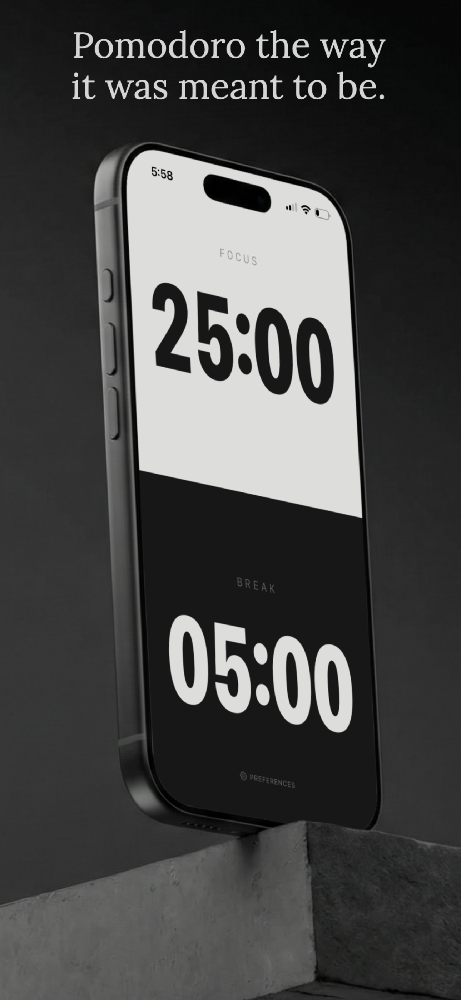
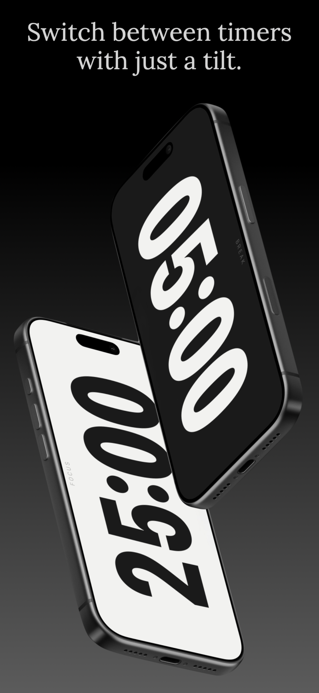
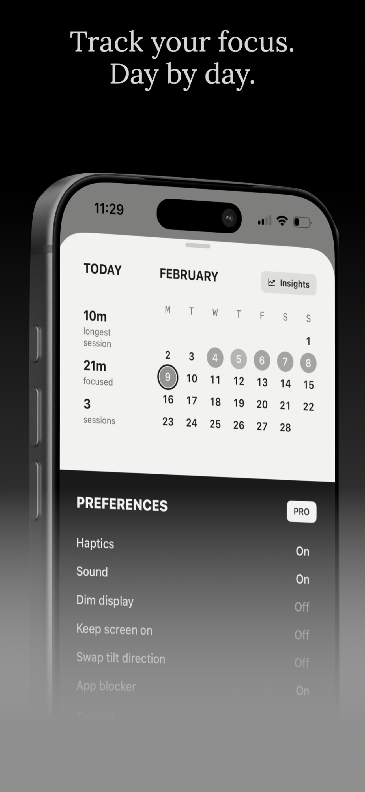
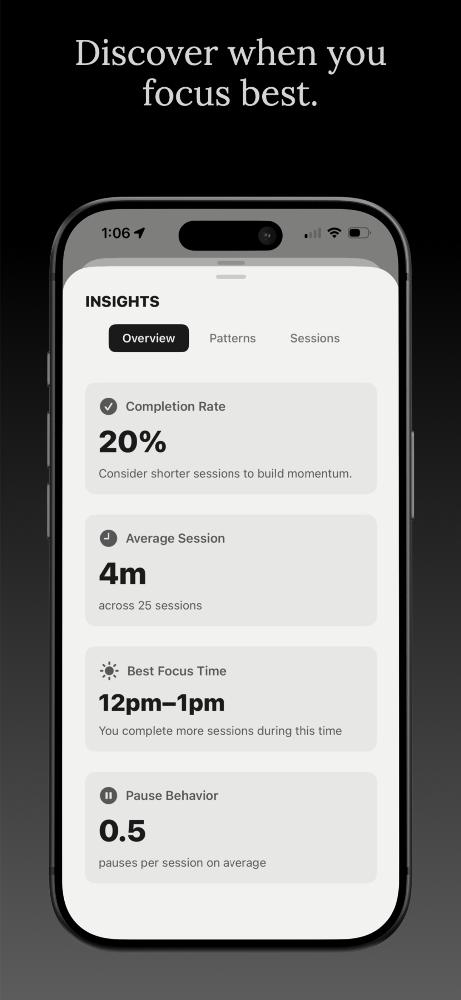
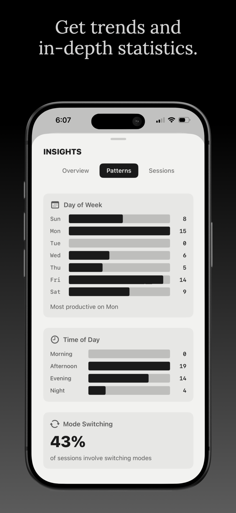
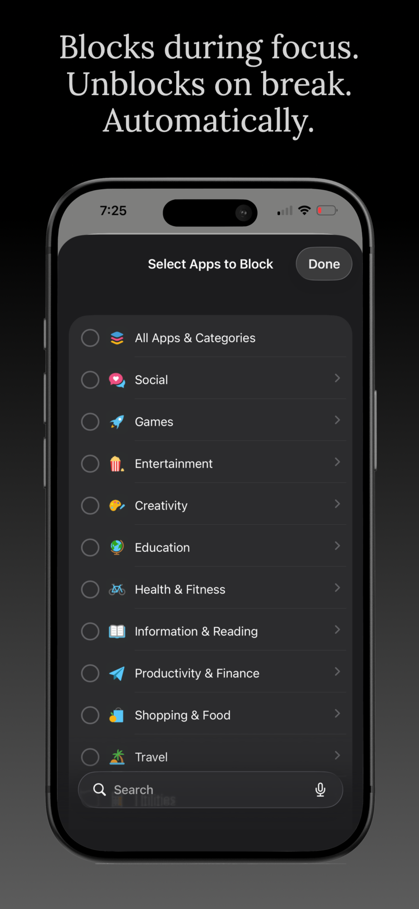
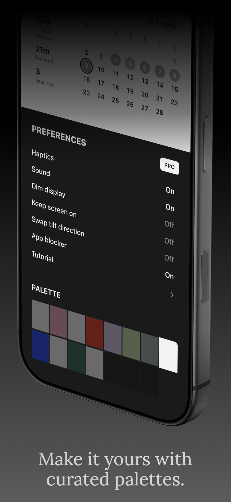

Focus Timer for iPhone
Tilt to start. Rotate to switch.
Shake to reset. No buttons. Just focus.
How it works
Tilt your phone to landscape and the timer starts. No tapping. No setup. Just tilt and go.
Rotate 180° to switch between focus and break modes. Flow continues without interruption.
Shake to reset the timer. Quick, decisive, physical. Exactly how resetting should feel.
TILT's intelligent app blocker uses iOS Screen Time to lock distracting apps the moment you start a session. They unblock automatically when you take a break. No willpower required.
Track completion rates, session length, and patterns over time. Your productivity data, visualized clearly — so you can double down on what actually works.
The app







Support
How do I start a focus timer?
Tilt your phone to landscape. The timer starts immediately. Make sure rotation lock is off in Control Center first.
The gestures aren't working.
Check that rotation lock is turned off. Swipe down from the top-right corner, open Control Center, and tap the lock icon to disable it.
How does the app blocker work?
It uses iOS Screen Time to block selected apps during focus sessions. Apps automatically unblock on breaks. Screen Time needs to be enabled in Settings.
How do I restore my purchase?
Go to Preferences in Tilt, tap "Unlock Pro," then tap "Restore Purchases." Your subscription is tied to your Apple ID.
How do I cancel my subscription?
iPhone Settings → tap your name → Subscriptions → Tilt → Cancel Subscription. You'll keep Pro access until the billing period ends.
Does Tilt collect my data?
Nope. No accounts, no cloud sync, no data collection. Everything stays on your device. More help: code@roydsantiago.com